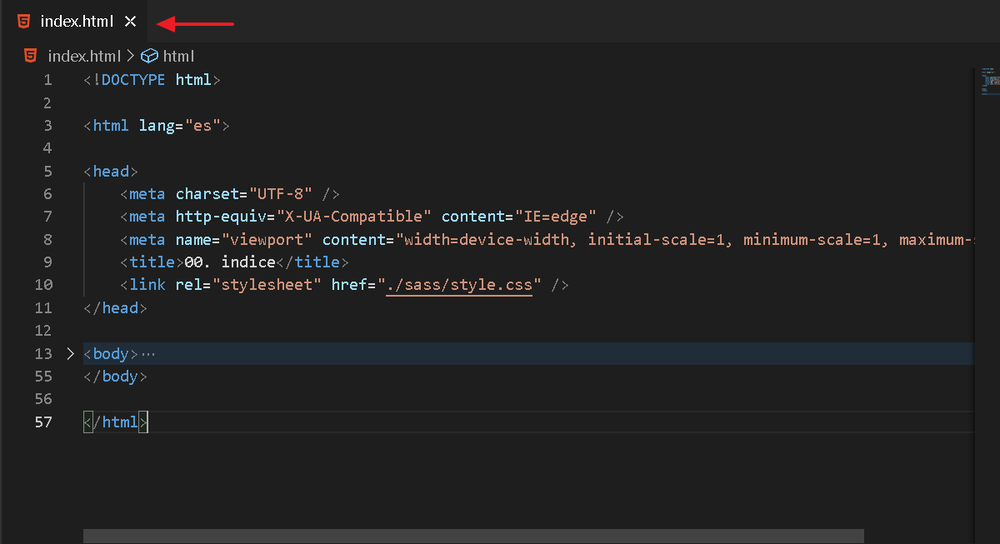
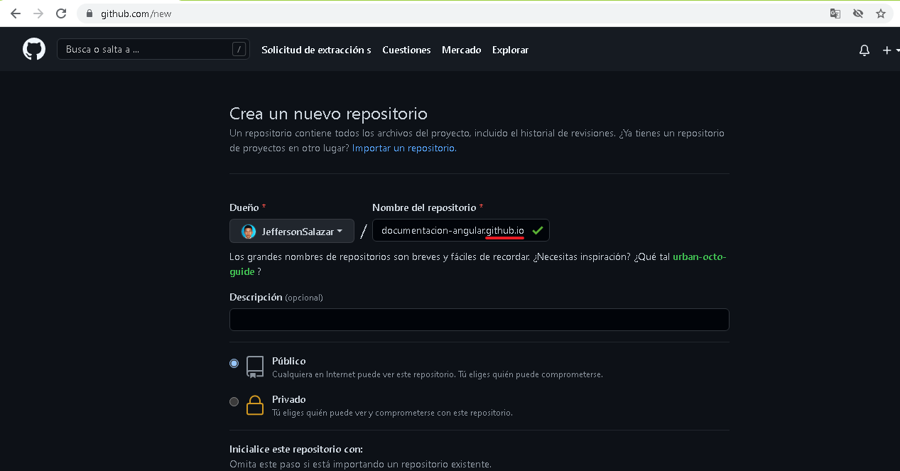
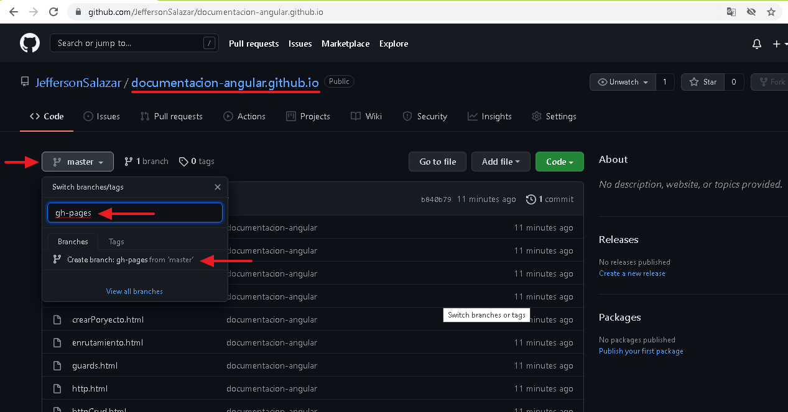
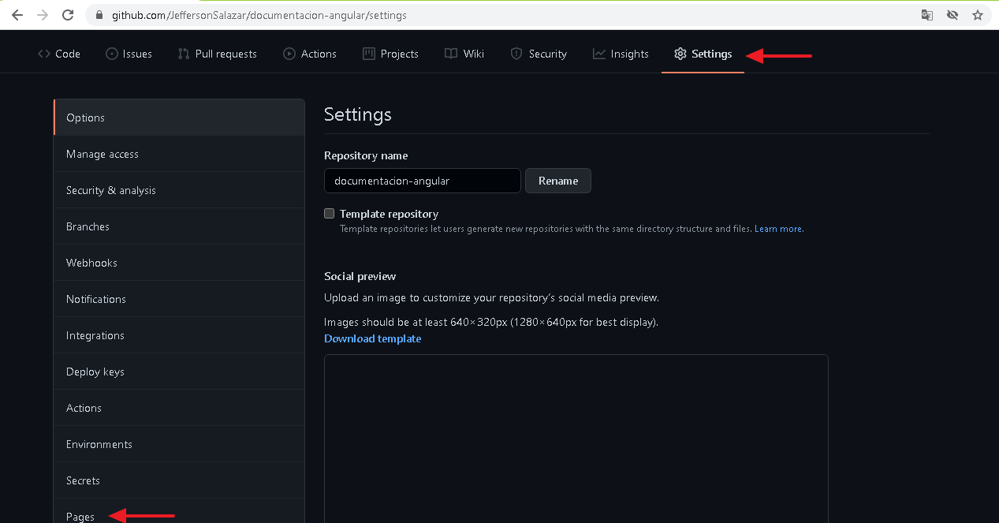
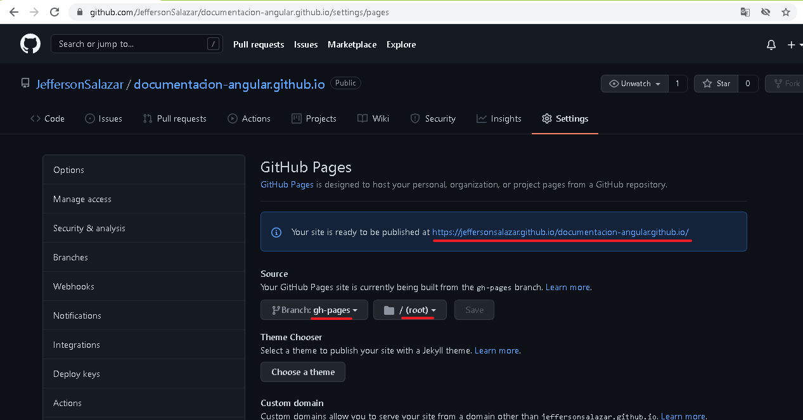

02. Pagina web en github pages
En este apartado aprenderemos a subir nuestra pagna a githubPages cabe resaltar ya debes tener tu proyecto guardado en un repostorio de github
01. Index.html archivo obligatorio

02. Nombre del repositorio.github.io

03. Creando la rama gh-pages

04. Ruta de github pages

05. Url del sitio web

------------------------------ End ------------------------------
01. Modificando el index.html

02. Actualizando los cambios generados

03. Visualizando la pagina

End add github pages